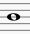

Alap hosszok:
Speciális hanghosszúságok:
A hangjegy után levő pont a hang hosszát felével növeli =
A hangjegy alatt vagy fölött levő pont a hang rövid, pontszerű (szaggatott) éneklését jelenti. Ettől nem jön hamarabb a következő hang!
Az ütemvonalon átkötött azonos magasságú hangok hossza összeadódik: = 
A 3 db hangjegy alatt levő 3-as azt jelenti, hogy 1/3-ad hangokból áll. A példában a 3 db. nyolcad 1 db. negyedet ér: =